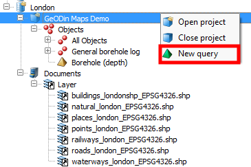
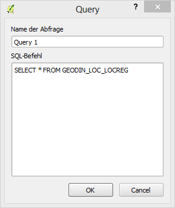
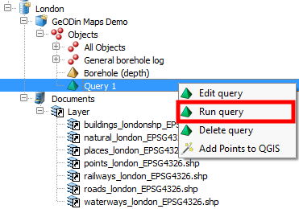
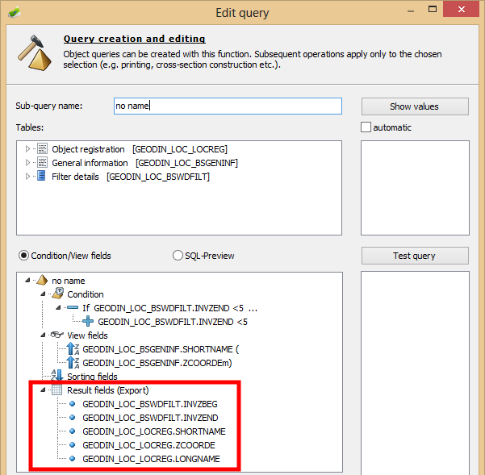
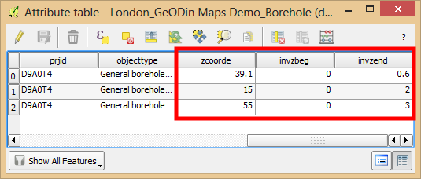

A right click on the project level allows the creation of queries, symbolised by a green pyramid.  The FROM statement must be entered manually, in case of complicated queries it can be copied from the query manager of GeODin.  The query must be executed by the user by opening the right click menu of the query. If successful, the object tree expands automatically, showing all objects matching this query. Custom queries, which were created in GeODin, are automatically imported to QGIS. The symbol is a yellow pyramid. These queries must be executed manually as well. As queries act as object groups they can be added to the QGIS map canvas. If the GeODin query contains result fields, they are transferred to QGIS in the background. They will be appended to the attribute table, if the objects are added to QGIS as a vector file. 